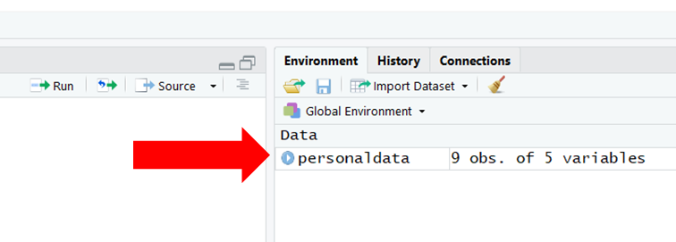

Chapter 5 Reading Data into R
Reading data refers to the process of importing data from a (working) directory or website into the R environment. When we read a data file into R, we often read it in as a data frame (df), where a data frame is a tabular display with columns representing variables and rows representing cases. Many different data file formats can be read into R as data frames, such as .csv (comma separated values), .xlsx (Excel workbook), .txt (text), .sas7bdat (SAS), and .sav (SPSS). In this chapter, you will learn how to read .csv and .xlsx files into R.
5.0.0.1 Video Tutorial
Link to Video Tutorial: https://youtu.be/smWjqhaxHY8
5.0.0.2 Functions & Packages Introduced
| Function | Package |
|---|---|
read_csv |
readr |
excel_sheets |
readxl |
read_excel |
readxl |
View |
base R |
print |
base R |
head |
base R |
tail |
base R |
names |
base R |
colnames |
base R |
list.files |
base R |
5.0.0.3 Initial Steps
Please note, that any function that appears in the Initial Steps section has been covered in a previous chapter. If you need a refresher, please view the relevant chapter. In addition, a previous chapter may show you how to perform the same action using different functions or packages.
To get started, please save the following data files into a folder on your computer that you will set as your working directory: “PersData.csv” and “PersData_Excel.xlsx”. As a reminder, you can access all of the data files referenced in this book by downloading them as a compressed (zipped) folder from the my GitHub site: https://github.com/davidcaughlin/R-Tutorial-Data-Files; once you’ve followed the link to GitHub, just click “Code” (or “Download”) followed by “Download ZIP”, which will download all of the data files referenced in this book. For the sake of parsimony, I recommend downloading all of the data files into the same folder on your computer, which will allow you to set that same folder as your working directory for each of the chapters in this book.
Next, set your working directory by using the setwd function (see below) or by doing it using drop-down menus. Your working directory folder will likely be different than the one shown below; “H:/RWorkshop” just happens to be the name of the folder that I save my data files to and that I set as my working directory. You can manually set your working directory folder in your drop-down menus by going to Session > Set Working Directory > Choose Directory…. If you need a refresher on how to set a working directory, please refer to Setting a Working Directory.
Finally, I highly recommend that you create a new R Script file (.R), which will allow you to edit and save your script and annotations. To learn more, please refer to Creating & Saving an R Script.
5.1 Read a .csv File
One of the easiest data file formats to work with when reading data into R is the .csv (comma-separated values) file format. Many HR analysts and other types of data analysts regularly work with .csv files, and .csv files can be created in Microsoft Excel and Google Sheets (as well as using many other programs). For example, many survey, data-analysis, and data-acquisition platforms allow data to be exported to .csv files.
When getting started in R, the way in which the .csv file is formatted can make your life easier. Specifically, the most straightforward .csv file format to read is structured such that (a) the first row contains the names of the variables (i.e., columns, fields), and (b) the second, third, fourth, and fifth rows (and so on) contain the observed scores on the variables (i.e., data), where each row represents a case (i.e., observation, employee). In the Special Topics section of this chapter, you will have an opportunity to read in .csv files in which the observed values do not begin until the third row or later.
As part of the tidyverse of R packages (Wickham 2019; Wickham, Averick, et al. 2019), the readr package (Wickham and Hester 2020) and its functions can be used to read in a few different data file formats (as long as they are rectangular), including .csv files. To read in .csv files, we will use the read_csv function from the readr package, as it tends to be faster than some of the other functions developed to read in data. There are several other R functions that can read in .csv files (e.g., read.csv, Read), and if you’re interested in learning two of those functions, feel free to check out the end-of-book supplement called Reading Data: Chapter Supplement.
By default, the read_csv function reads data in as a data frame, where a data frame is a specific type of table in which columns contain variables and rows contain cases. Well, technically, the function reads data in as a tibble (as opposed to a data frame), where a tibble behaves a lot like a data frame. Thus, from here on out in the book, I’ll just use the term “data frame.” If you would like more information about tibbles, check out Wickham and Grolemund’s (2017) chapter on tibbles: http://r4ds.had.co.nz/tibbles.html.
To use the read_csv function, the readr package must be installed and accessed using the install.packages and library functions, respectively. Type "readr" (note the quotation marks) into the parentheses of the install.packages function, and run that line of code.
Next, type readr (without quotation marks) into the parentheses of the library function. In other words, include readr as the library function’s sole parenthetical argument. Run that line of code.
Type the name of the read_csv function, and note that all of the letters in the function name are lowercase. As the sole argument within the function’s parentheses and within quotation marks (" "), type the exact name of the .csv data file as it is named in your working directory (“PersData.csv”), and be sure to follow it immediately with the .csv extension. Remember, R is a language where spaces matter in the context of file names; meaning, if there are spaces in your file name, there needs to be spaces when the file name appears in your R code. Remember, the file called “PersData.csv” should already be saved in your working directory folder (see Initial Steps).
##
## -- Column specification --------------------------------------------------------
## cols(
## id = col_double(),
## lastname = col_character(),
## firstname = col_character(),
## startdate = col_character(),
## gender = col_character()
## )## # A tibble: 9 x 5
## id lastname firstname startdate gender
## <dbl> <chr> <chr> <chr> <chr>
## 1 153 Sanchez Alejandro 1/1/2016 male
## 2 154 McDonald Ronald 1/9/2016 male
## 3 155 Smith John 1/9/2016 male
## 4 165 Doe Jane 1/4/2016 female
## 5 125 Franklin Benjamin 1/5/2016 male
## 6 111 Newton Isaac 1/9/2016 male
## 7 198 Morales Linda 1/7/2016 female
## 8 201 Providence Cindy 1/9/2016 female
## 9 282 Legend John 1/9/2016 maleAs you can see in your Console, the data frame that appears contains only a handful of rows and columns; nonetheless, this gives you an idea of how the read_csv function works.
Often, you will want to assign a data frame to an object that will be stored in your (Global) Environment for subsequent use; once the data are assigned, the object becomes a data frame object. By creating a data frame object, you can manipulate and/or analyze the data within the object using a variety of functions (and without changing the data in the original .csv file). To assign the data frame to an object, we simply (a) use the same read_csv function and argument as above, (b) add either the <- or = operator to the left of the read_csv function, and (c) create a name of our choosing for the data frame object by entering that name to the left of the <- or = operator. You can name your data frame object whatever you would like as long as it doesn’t include spaces, doesn’t start with a numeral, and doesn’t include special characters like * or - (to name a few). I recommend choosing a name that is relatively short but descriptive, and that is not the same as another R function or variable name that you plan to use. Below, I name the new data frame object personaldata; note, however, that I could have just have easily called PersonalData, pd, df, or any other single-word name that doesn’t begin with a special character or a numeral.
##
## -- Column specification --------------------------------------------------------
## cols(
## id = col_double(),
## lastname = col_character(),
## firstname = col_character(),
## startdate = col_character(),
## gender = col_character()
## )Using the head function from base R, let’s print just the first 6 rows of our data frame object that we named personaldata. This will allow us to verify that everything worked as planned.
## # A tibble: 6 x 5
## id lastname firstname startdate gender
## <dbl> <chr> <chr> <chr> <chr>
## 1 153 Sanchez Alejandro 1/1/2016 male
## 2 154 McDonald Ronald 1/9/2016 male
## 3 155 Smith John 1/9/2016 male
## 4 165 Doe Jane 1/4/2016 female
## 5 125 Franklin Benjamin 1/5/2016 male
## 6 111 Newton Isaac 1/9/2016 maleIf you are working in RStudio, you will see the data frame object appear in your Global Environment window panel, as shown below. If you click on the name of the data frame object in your Global Environment, a new tab will open up next to your R script editor tab, which will allow you to view the data.

Alternatively, you can use the View function from base R with the exact name of the data frame object we just created as the sole parenthetical argument. Note that the View function begins with an uppercase letter. Remember, R is case and space sensitive when it comes to function names. Further, the name of the data frame object you enter into the parentheses of the function must be exactly the same as the name of the object you created. That is, R won’t recognize the data frame object if you type it as PersonalData, but R will recognize it if you type it as personaldata. Sometimes it helps to copy and paste the exact names of functions and variables into the function parentheses.
Instead of using the View function, you could just “run” the name of the data frame object by highlighting personaldata in your R Script and clicking “Run” (or you can enter the name of the data frame object directly into your Console command line and click Enter). Another option is to use the print function (from base R) with the name of the data frame object as the sole argument in the parentheses. Similarly, if you have many rows of data, you can use the head function from base R to see just the first 6 rows of data, or you can use the tail function from base R to see the last 6 rows of data.
## # A tibble: 9 x 5
## id lastname firstname startdate gender
## <dbl> <chr> <chr> <chr> <chr>
## 1 153 Sanchez Alejandro 1/1/2016 male
## 2 154 McDonald Ronald 1/9/2016 male
## 3 155 Smith John 1/9/2016 male
## 4 165 Doe Jane 1/4/2016 female
## 5 125 Franklin Benjamin 1/5/2016 male
## 6 111 Newton Isaac 1/9/2016 male
## 7 198 Morales Linda 1/7/2016 female
## 8 201 Providence Cindy 1/9/2016 female
## 9 282 Legend John 1/9/2016 male## # A tibble: 9 x 5
## id lastname firstname startdate gender
## <dbl> <chr> <chr> <chr> <chr>
## 1 153 Sanchez Alejandro 1/1/2016 male
## 2 154 McDonald Ronald 1/9/2016 male
## 3 155 Smith John 1/9/2016 male
## 4 165 Doe Jane 1/4/2016 female
## 5 125 Franklin Benjamin 1/5/2016 male
## 6 111 Newton Isaac 1/9/2016 male
## 7 198 Morales Linda 1/7/2016 female
## 8 201 Providence Cindy 1/9/2016 female
## 9 282 Legend John 1/9/2016 male## # A tibble: 6 x 5
## id lastname firstname startdate gender
## <dbl> <chr> <chr> <chr> <chr>
## 1 153 Sanchez Alejandro 1/1/2016 male
## 2 154 McDonald Ronald 1/9/2016 male
## 3 155 Smith John 1/9/2016 male
## 4 165 Doe Jane 1/4/2016 female
## 5 125 Franklin Benjamin 1/5/2016 male
## 6 111 Newton Isaac 1/9/2016 male## # A tibble: 6 x 5
## id lastname firstname startdate gender
## <dbl> <chr> <chr> <chr> <chr>
## 1 165 Doe Jane 1/4/2016 female
## 2 125 Franklin Benjamin 1/5/2016 male
## 3 111 Newton Isaac 1/9/2016 male
## 4 198 Morales Linda 1/7/2016 female
## 5 201 Providence Cindy 1/9/2016 female
## 6 282 Legend John 1/9/2016 maleIf your data file resides in a folder other than your set working directory, then you can type the exact name of the path directory where the file resides followed by a forward slash (/) before the file name. Please note that your path directory will almost certainly be different than the one I show below.
Note that by assigning this data frame to an object called personaldata, we have overwritten the previous version of the object with that same name. In this case, this isn’t a big deal because we just read in the exact data using two different methods. If you don’t wish to overwrite an existing object, just name the object something unique. When naming objects, I suggest that you avoid the names of functions that you plan to use.
When needed, you can also use the read_csv function to read in .csv data from a website. For example, rather than save the .csv file to a folder on your computer, you can read in the raw data directly from my GitHub site. Within the quotation marks (" "), simply paste in the following URL: https://raw.githubusercontent.com/davidcaughlin/R-Tutorial-Data-Files/master/PersData.csv.
# Read .csv data file into R from a website
personaldata <- read_csv("https://raw.githubusercontent.com/davidcaughlin/R-Tutorial-Data-Files/master/PersData.csv")##
## -- Column specification --------------------------------------------------------
## cols(
## id = col_double(),
## lastname = col_character(),
## firstname = col_character(),
## startdate = col_character(),
## gender = col_character()
## )5.2 Read a .xlsx File
Reading in Excel workbook files with more than one worksheet requires a bit more work. To read in a .xlsx file with multiple worksheets, we will use the excel_sheets and read_excel functions from the readxl package (Wickham and Bryan 2019). Be sure to install and access the read_xl package if you haven’t already.
To view the worksheets within an Excel workbook file, simply type the name of the excel_sheets function, and as the sole parenthetical argument, type the exact name of the data file with the .xlsx extension – all within quotation marks (i.e., "PersData_Excel.xlsx").
## [1] "Year1" "Year2"Note that the .xlsx file contains two worksheets called “Year1” and “Year2”. We can now reference each of these worksheets when reading in the data from the Excel workbook file. To do so, we will use the read_excel function. As the first argument, enter the exact name of the data file (as named in your working directory), followed by .xlsx – and all within quotation marks (" "). As the second argument, type sheets= followed by the name of the worksheet containing the data you wish to read in; let’s read in the data from the worksheet called “Year1”. Finally, either the <- or = operator can be used to name the data frame object. Below, I name the data frame object personaldata_year1 to avoid overwriting the data frame object we created above called personaldata. Remember to type a comma (,) before the second argument, as this is how we separate arguments from one another when there are more than one.
# Read data from .xlsx sheet called "Year1" as data frame and assign to object
personaldata_year1 <- read_excel("PersData_Excel.xlsx", sheet="Year1")## # A tibble: 9 x 5
## id lastname firstname startdate gender
## <dbl> <chr> <chr> <dttm> <chr>
## 1 153 Sanchez Alejandro 2016-01-01 00:00:00 male
## 2 154 McDonald Ronald 2016-01-09 00:00:00 male
## 3 155 Smith John 2016-01-09 00:00:00 male
## 4 165 Doe Jane 2016-01-04 00:00:00 female
## 5 125 Franklin Benjamin 2016-01-05 00:00:00 male
## 6 111 Newton Isaac 2016-01-09 00:00:00 male
## 7 198 Morales Linda 2016-01-07 00:00:00 female
## 8 201 Providence Cindy 2016-01-09 00:00:00 female
## 9 282 Legend John 2016-01-09 00:00:00 maleLet’s repeat the process for the worksheet called “Year2” and assign these data to a new object.
# Read data from .xlsx sheet called "Year2" as data frame and assign to object
personaldata_year2 <- read_excel("PersData_Excel.xlsx", sheet="Year2")## # A tibble: 9 x 5
## id lastname firstname startdate gender
## <dbl> <chr> <chr> <dttm> <chr>
## 1 153 Sanchez Alejandro 2016-01-01 00:00:00 male
## 2 155 Smith John 2016-01-09 00:00:00 male
## 3 165 Doe Jane 2016-01-04 00:00:00 female
## 4 125 Franklin Benjamin 2016-01-05 00:00:00 male
## 5 111 Newton Isaac 2016-01-09 00:00:00 male
## 6 201 Providence Cindy 2016-01-09 00:00:00 female
## 7 282 Legend John 2016-01-09 00:00:00 male
## 8 312 Ramos Jorge 2017-03-01 00:00:00 male
## 9 395 Lucas Nadia 2017-03-04 00:00:00 female5.3 Special Topics
Thus far in this chapter, I have showcased some of the most common approaches to reading in data files, with an emphasis on reading in .csv files with the first row corresponding to the column (variable) names and the remaining rows containing the substantive data for cases. There are, however, other challenges and considerations you might encounter along the way, and this section, I cover some special topics related to reading data into R.
5.3.1 List Data File Names in Working Directory
If you would like to obtain the exact names of files located in a (working) directory, the list.files function from base R comes in handy. This function will return a list of all file names within a particular directory or file names that meet a particular pattern. For our purposes, let’s identify all of the .csv data file names contained within our current working directory. As the first argument, type path= followed by the path associated with your working directory. Second, because we are only pulling the file names associated with .csv files, enter the argument all.files=FALSE. Third, type the argument full.names=FALSE to indicate that we do not want the path to precede the file names. Finally, type the argument pattern=".csv" to request the names of only those file names that match the regular expression of “.csv” will be returned.
# List data file names in working directory
list.files(path="H:/RWorkshop",
all.files=FALSE,
full.names=FALSE,
pattern=".csv")In your Console, you should see the list of file names you requested. You could then copy specific file names that you wish to read into R.
5.3.2 Skip Rows of Data When Reading
Some survey platforms like Qualtrics allow for data to be downloaded in .csv format; however, sometimes these platforms include variable name and label information in the second and even third rows of data as opposed to in just the first row. Fortunately, we can skip rows when reading in such data files.
Let’s pretend that the first row of the “PersData.csv” data file contains variable names, and the second and third rows contain variable label information and explanations. We can nest the read_csv function (see above) within the names function, which will result in a vector of names from the first row of the data file. Using the <- operator, let’s name this vector var_names so that we can reference it in the subsequent step.
##
## -- Column specification --------------------------------------------------------
## cols(
## id = col_double(),
## lastname = col_character(),
## firstname = col_character(),
## startdate = col_character(),
## gender = col_character()
## )Next, using the read_csv function, we will read in the data file, skip the first three rows, and add the variable names we pulled in the previous step. As usual, as the first argument of the read_csv function, type the exact name of the data file you wish to read in within quotation marks (" "). As the second argument, type skip=3 to indicate that you wish to skip the first three rows when reading in the data. As the third argument, type col_names= followed by the name of the var_names vector object we created in the previous step. Using the <- operator, let’s name this data frame object test.
# Read data file (but skip rows 1-3) & introduce variable names
test <- read_csv("PersData.csv",
skip=3,
col_names=var_names)##
## -- Column specification --------------------------------------------------------
## cols(
## id = col_double(),
## lastname = col_character(),
## firstname = col_character(),
## startdate = col_character(),
## gender = col_character()
## )Finally, let’s see the fruits of our labor by printing the contents of the test data frame object to our Console.
## # A tibble: 7 x 5
## id lastname firstname startdate gender
## <dbl> <chr> <chr> <chr> <chr>
## 1 155 Smith John 1/9/2016 male
## 2 165 Doe Jane 1/4/2016 female
## 3 125 Franklin Benjamin 1/5/2016 male
## 4 111 Newton Isaac 1/9/2016 male
## 5 198 Morales Linda 1/7/2016 female
## 6 201 Providence Cindy 1/9/2016 female
## 7 282 Legend John 1/9/2016 male5.4 Summary
In this chapter, we learned how to read data into the R environment. Reading data into R is an important first step, and often, it is the step that causes the most problems for new R users. We practiced applying the read_csv function from the readr pack and the read_excel function from the read_xl package to read .csv and .xlsx files, respectively, into the R environment.
References
Wickham, Hadley. 2019. Tidyverse: Easily Install and Load the ’Tidyverse’. https://CRAN.R-project.org/package=tidyverse.
Wickham, Hadley, Mara Averick, Jennifer Bryan, Winston Chang, Lucy D’Agostino McGowan, Romain François, Garrett Grolemund, et al. 2019. “Welcome to the tidyverse.” Journal of Open Source Software 4 (43): 1686. https://doi.org/10.21105/joss.01686.
Wickham, Hadley, and Jennifer Bryan. 2019. Readxl: Read Excel Files. https://CRAN.R-project.org/package=readxl.
Wickham, Hadley, and Garrett Grolemund. 2017. R for Data Science: Visualize, Model, Transform, Tidy, and Import Data. Sebastopol, California: O’Reilly Media, Inc. https://r4ds.had.co.nz/n.
Wickham, Hadley, and Jim Hester. 2020. Readr: Read Rectangular Text Data. https://CRAN.R-project.org/package=readr.